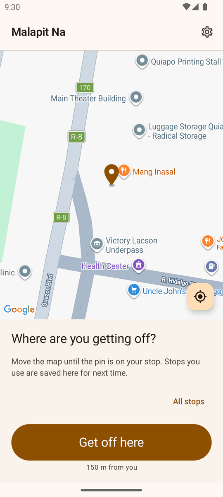
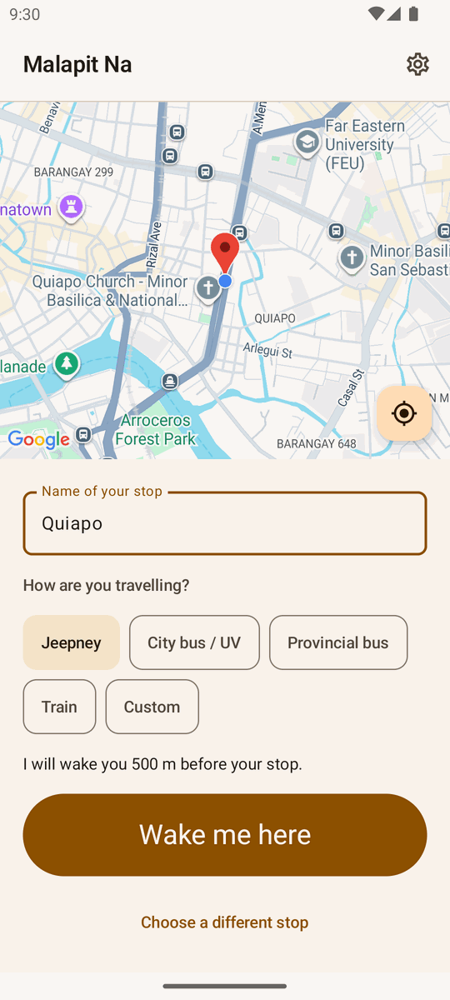
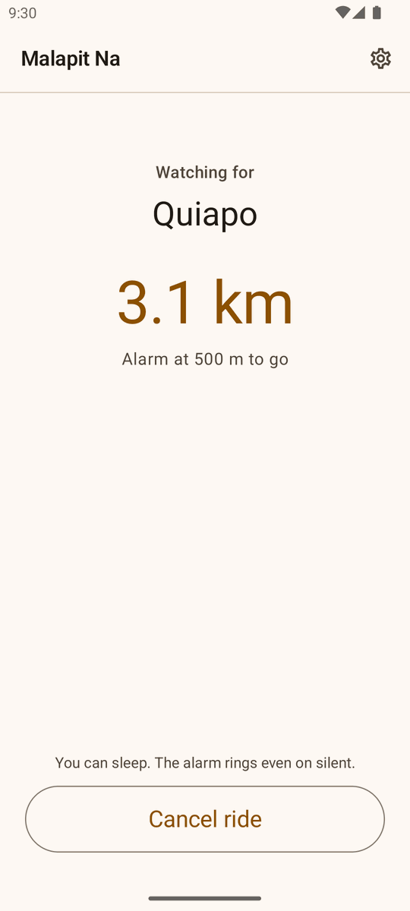
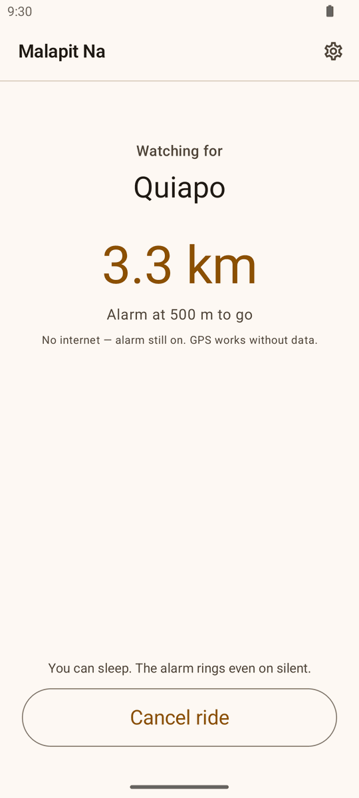
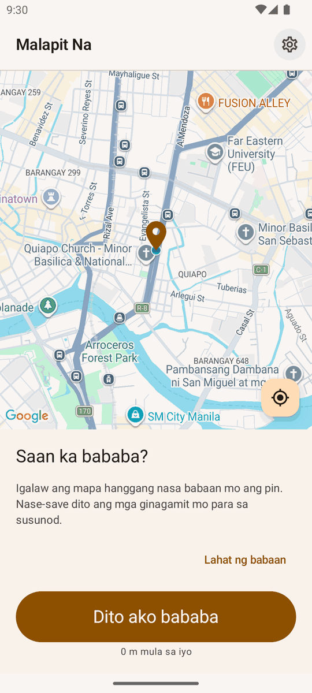

Pin your stop
Move the map until the pin is on the place you are getting off, or tap a stop you have saved before.
Pin where you are getting off, then close your eyes. Malapit Na watches the distance and wakes you about 500 m before your stop—even with the screen locked.

Move the map until the pin is on the place you are getting off, or tap a stop you have saved before.
Jeepney, city bus, UV Express, provincial bus, or train—each one sets how early the alarm should ring.
Sleep, scroll, or stare out the window. The alarm rings over the lock screen, even on silent.
GPS is not the internet. Your phone can find where it is without a single kilobyte of data, so the alarm keeps counting down through tunnels, dead spots, and an empty prepaid load.
Malapit Na is an Android destination alarm for jeepney, city bus, UV Express, provincial bus, and train commuters. Set your stop before you settle in, and the app keeps watching the distance while the screen is locked—so a long EDSA crawl or a provincial bus at 3 a.m. does not have to cost you your stop.



Your location never leaves the phone. Active rides, saved stops, settings, and ride history all stay on your device. There is no Malapit Na account, no ads, and no Fri Vei As analytics or backend.
Read the privacy policy →Kumpleto rin sa Filipino ang site na ito—pati na ang app mismo. Piliin lang ang wika sa Settings.
Basahin sa Filipino →

Free on Google Play. No ads, no account, nothing to lose but your stop.